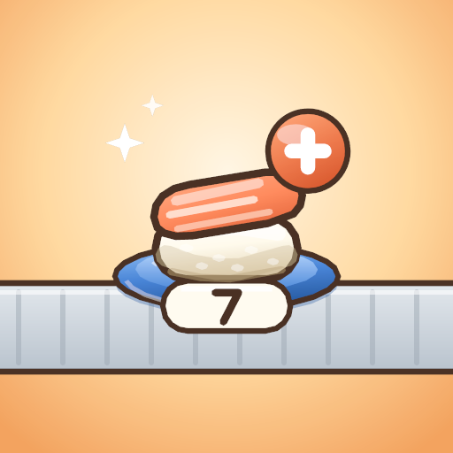

KKingdori Games
산수 초밥 · Math Sushi · さんすう寿司 · Sushi Toán Học
회전초밥 가게에서 아이들 머리 위 계산식의 답과 같은 숫자 초밥을 배달하는 덧셈 · 뺄셈 교육 게임입니다.
An addition & subtraction learning game: serve each child the sushi plate whose number matches the answer to their math problem.
개인정보처리방침 · Privacy Policy · プライバシーポリシー · Chính sách quyền riêng tư